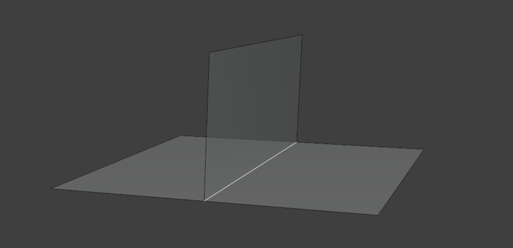

Solidify Pro¶
{kind=link}
Solidify Pro offers several advantages to Blender's Solidify Modifier:
- Custom normal support.
- Edge loops.
- Custom profile control.
- Inset control.
- More creasing control on the rim.
- Match Boundary normals.
- UV settings.
- Front/Back/Rim exclusion/output attributes.
Examples¶
Be sure to check out the examples file to see Solidify Pro in action.
{kind=link}
Current Limitations¶
Not all the settings of Blender's native "Solidify" modifier have been replicated yet. The notable exclusions are:
- Cannot solidify edges with more than two faces. This is possible with "Complex" mode in the native modifier.

- Float control of Bevel Weight. Bevel weight can be set on/off by using the output attribute Boundary Edges. This attribute can then be specified in a subsequent bevel modifier.
{kind=link}
Options¶
- Thickness: Thickness of solidify operation.
- Offset: Offset the thickness from the center.
- Direction: Direction to extrude:
- Normal: Normal stored on geometry. Will use custom normals if they exist.
- True Normal: Geometric normal (ignores custom normals).
- Custom: Custom direction (Specify).
- Even Thickness: Method for calculating even thickness. See even thickness settings for more information.
{kind=link}
Output Geometry¶
In this section you can choose which parts of the solidify operation to keep.
Offset Surface
If you only plan on keeping the front/back of the solidify operation, consider using Offset Surface as it's much faster.
{kind=link}
Inset¶
Inset the front or back faces from their boundary edge.
- Amount: Distance to inset faces.
- Edge Falloff: Falloff distance from the edge of the inset. Use to smooth errors at the edge of the inset.
- Scale: Scale faces around their average position. More stable than insetting but can be harder to control.
Rim Geometry¶
Control the shape of the geometry created along the rim.
- Rim Profile: Shape of the rim profile:
- Linear: Flat rim with even edge loops.
- V-Shape: Specify an angle for a "v-shape" profile.
- Round: Round profile with even edge loops.
- Custom Curve: Provide a curve object to apply as a rim profile.
- Invert: Invert the height of the profile.
- Reverse: Reverse the profile curve (swap left/right).
Profile Geometry¶
- Profile Height: How height is calculated along the rim profile:
- Consistent: Rim profile is consistent height based on the specified thickness.
- Relative: Rim profile will scale locally based on the distance between points.
- Specify: Specify a value for profile height.
Crease¶
Apply crease values to the rim. - Front: Crease value to apply on the front boundary. - Back: Crease value to apply on the back boundary. - Rim Crease: Method for creasing perpendicular rim edges: - Edge Angle: Apply creases by edge angle. - Signed Edge Angle: Apply creases by convex/concave angles. - Vertex Crease: Use Vertex creaes values for edge creases. - Rim: Crease value to apply to selected rim edges.
Normals¶
Control normals and sharp edges. - Mark Sharp: Mark solidified edges sharp. - Profile Angle: Angle along the profile curve to mark sharp (along the rim). - Rim Angle: Angle to mark sharp across the rim. - Extend Sharpness: Extend sharp edges across the rim. - Match Boundary Normals: Match normals along the rim boundary. Requires at least one edge loop.
Materials¶
Specify material to use on rim, you can either set material by index or specify a material.
UVs¶
Choose whether and how to generate UVs on rim faces
Selection¶
Which faces to solidify. See selection settings for more information.